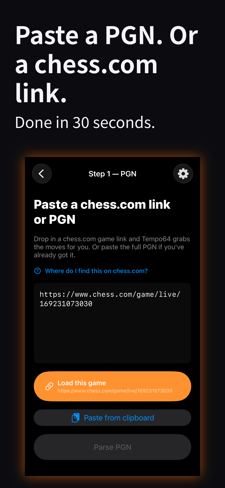
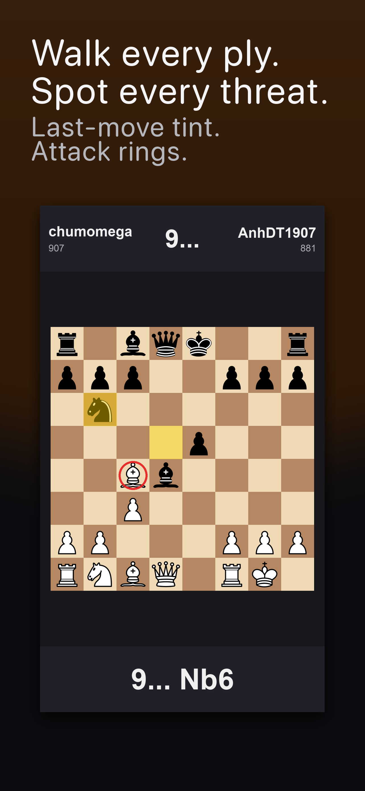
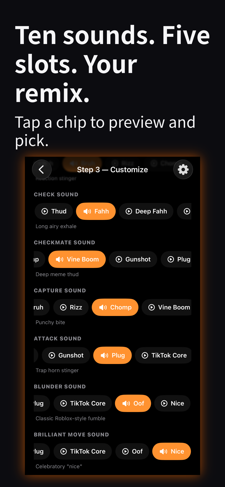
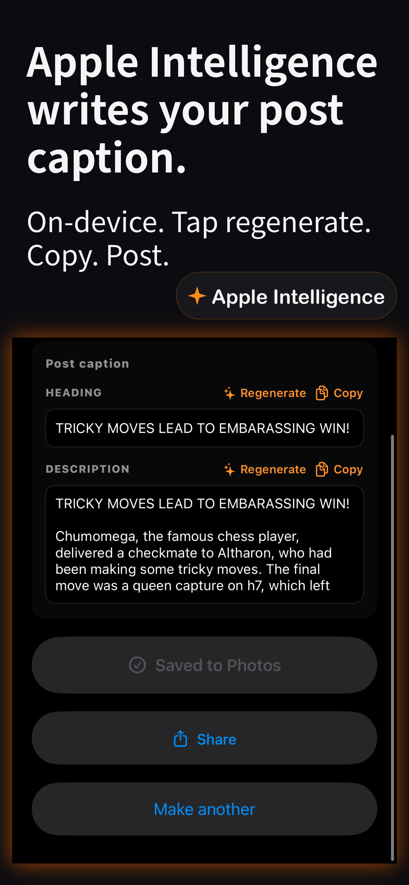

What it does
Tempo64 takes any chess PGN and turns it into a vertical short ready for social. Every move plays a satisfying thud. Captures get a punchy bite. Checks land with a dramatic fahh. Checkmate hits with a ringing tail you'll want to share.
See it in action





Features
-
Vertical 9:16
1080×1920 H.264 + AAC, ready for TikTok, Reels, and Shorts.
-
Three sound packs
Pick your check sound and your checkmate ring-out — three of each, audition before you commit.
-
Three board themes
Classic, Lichess, Tournament. Live preview on the customize screen.
-
Pace control
Slow / Normal / Fast — adjust how long each move stays on screen.
-
Live scrubber
Walk the parsed game ply by ply with last-move highlights and attack rings before you render.
-
Background-friendly
Renders survive switching apps. We send a notification when your video is ready.
How it works
- Paste your PGN. From Chess.com, Lichess, or any standard export — we show you how to copy it from each.
- Review the game. A built-in board scrubber walks every ply with attack highlights.
- Customize. Theme, check sound, mate sound, pace, outro card.
- Render. Save to Photos or share via the iOS share sheet.
Privacy
Tempo64 runs entirely on your device. Your PGN, your generated videos, your audio mix — everything stays local. We don't have a server. We don't collect your games. We don't track you.
Support
Found a bug, have a feature request, or want to share what you made? email support and we'll take a look.